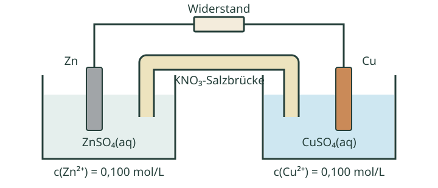

So arbeitest du
Bearbeite die Aufgaben auf Papier. Du brauchst einen Taschenrechner mit Zehnerlogarithmus. Die Richtzeiten ergeben zusammen 27 Minuten; die anschließende Selbstkontrolle kommt hinzu. Öffne zunächst nur die Hilfe, die du wirklich brauchst. Notiere zu jeder Aufgabe: selbstständig gelöst, mit Hilfe gelöst oder noch offen.
Alle Versuchsdaten und technischen Vergleichsdaten sind für diese Übung konstruiert. Die Aufgaben beschreiben verschiedene Modelle; die Zelle aus A und B betreibt nicht die Elektrolyse aus C. Es ist kein praktischer Versuch vorgesehen.
| Größe | Wert |
|---|---|
| Temperatur | 25 °C |
| Standard-Reduktionspotentiale gegen die Standardwasserstoffelektrode | E°(Zn²⁺/Zn) = −0,760 V E°(Cu²⁺/Cu) = +0,340 V |
| Nernst-Faktor bei 25 °C | 0,0592 V für den Zehnerlogarithmus; noch durch die Elektronenzahl z zu teilen |
| Standardkonzentration c° | 1 mol/L |
| Faraday-Konstante F, gerundet | 96 485 C/mol |
| Molare Masse von Kupfer | M(Cu) = 63,55 g/mol |
Für A und B: reine Metalle; Aktivitäten der Metallionen werden durch c/c° angenähert. Flüssigkeitsgrenzflächenpotentiale werden vernachlässigt. Die Spannungsrechnung beschreibt den näherungsweisen Leerlauf; Änderungen durch Entladung werden dabei nicht berücksichtigt.
A · Modell erklären · etwa 6 Minuten
Wo fließt welche Ladung?
Eine Daniell-Zelle enthält zwei Sulfatlösungen mit jeweils c(M²⁺) = 0,100 mol/L. Eine KNO₃-Salzbrücke stellt die ionenleitende Verbindung her. Für diese Aufgabe wird die Zelle kurz über einen Widerstand entladen.


- Beschrifte die Elektroden mit Anode/Kathode und Plus/Minus. Formuliere die beiden Teilgleichungen und die Gesamtreaktion. Begründe die Reaktionsrichtung mit den gegebenen Potentialen.
- Zeichne den Elektronenfluss im äußeren Leiter ein. Gib für K⁺ und NO₃⁻ aus der Salzbrücke jeweils an, in welche Halbzelle sie zum Ladungsausgleich wandern. Erkläre, weshalb die Zelle bei einer Unterbrechung der Salzbrücke keinen dauerhaften Strom liefern kann.
A · Hilfe 1: Reaktion und Ladung verbinden
Überlege, welche Elektrode Elektronen bereitstellt und an welcher sie verbraucht werden. Wo entstehen dabei zusätzliche gelöste Metallionen? Wo verschwinden gelöste positive Ladungsträger aus der Lösung?
A · Hilfe 2: Das Modell ergänzen
Das Redoxpaar mit dem höheren Reduktionspotential wird hier reduziert. Beide Metallionen sind zweifach positiv geladen. Ergänze: Zn → Zn²⁺ + …; Cu²⁺ + … → Cu. Die an der Zinkseite zusätzlich entstehenden positiven Ladungen müssen durch negative Ionen ausgeglichen werden; an der Kupferseite ist es umgekehrt.
A · Musterlösung
Zink: Anode und Minuspol. Hier erfolgt die Oxidation. Kupfer: Kathode und Pluspol. Hier erfolgt die Reduktion.
Cu²⁺(aq) + 2 e⁻ → Cu(s)
Zn(s) + Cu²⁺(aq) → Zn²⁺(aq) + Cu(s)
Cu²⁺/Cu besitzt das höhere Standard-Reduktionspotential. Da in A beide Metallionenkonzentrationen und beide Elektronenzahlen gleich sind, ist die Nernst-Korrektur für beide Halbzellen gleich. Der Potentialunterschied bleibt positiv für die angegebene Reaktionsrichtung.
Die Elektronen bewegen sich außen vom Zink über den Widerstand zum Kupfer. In den Lösungen und in der Salzbrücke leiten Ionen. Zum Ladungsausgleich wandern NO₃⁻-Ionen in die Zinkhalbzelle und K⁺-Ionen in die Kupferhalbzelle. Diese vereinfachte Darstellung beschreibt den ausgleichenden Transport der Brückenionen; sie behauptet nicht, dass sich ausschließlich diese Ionen bewegen.
Ohne ionenleitende Verbindung entstehen bereits bei kleinen Umsätzen Ladungsungleichgewichte, die der weiteren Reaktion entgegenwirken. Ein dauerhafter Entladestrom kommt nicht zustande. Elektronen durchqueren die Salzbrücke nicht. Eine poröse Fritte in einem anderen Aufbau ermöglicht ebenfalls Ionenleitung, ist aber keine ausschließlich für ein Ion durchlässige Membran.
Zum Wiederholen: 2.1 · Zellmodell, 2.2 · Pole und Elektroden, 2.3 · Ladungswege.
B · Spannung berechnen · etwa 7 Minuten
Was ändert die verdünnte Kupferlösung?
In einer frisch angesetzten Zelle wie in A wird nur die Kupfersulfatlösung ersetzt. Nun gilt c(Cu²⁺) = 0,00100 mol/L; c(Zn²⁺) = 0,100 mol/L bleibt gleich. Gemessen werden soll die Leerlaufspannung.
- Berechne beide Halbzellenpotentiale mit der Nernst-Gleichung und daraus die Zellspannung. Zeige deine Einsetzungen und nenne die verwendete Elektronenzahl.
- Vergleiche mit U° = 1,100 V: Um wie viel ändert sich die berechnete Spannung? Prüfe, ob die Polung aus A bestehen bleibt. Nenne eine Grenze des Vergleichs mit einer realen Spannungsmessung.
B · Hilfe 1: Beide Halbzellen berücksichtigen
Die Metallkonzentration gehört nicht in den Logarithmus: Für das reine feste Metall wird die Aktivität 1 gesetzt. Verwende für jedes gelöste Metallion den dimensionslosen Quotienten c/c°. Eine Verringerung der Metallionenkonzentration senkt in diesem Modell das Reduktionspotential.
B · Hilfe 2: Rechenansatz
U ≈ E(Kathode) − E(Anode)
Hier ist jeweils z = 2. Nutze lg(0,100) = −1 und lg(0,00100) = −3. Ermittle die beiden Potentiale zunächst getrennt und bilde erst anschließend ihre Differenz.
B · Musterlösung und Rechenweg
Für beide Reduktionen werden pro Metallion zwei Elektronen benötigt, also z = 2.
= −0,760 V − 0,0296 V = −0,7896 V
= +0,340 V − 0,0888 V = +0,2512 V
U − U° = 1,0408 V − 1,100 V = −0,0592 V
Die Spannung ist im Modell um 59,2 mV kleiner. Das Kupferpotential liegt weiterhin höher als das Zinkpotential: Kupfer bleibt beim galvanischen Entladen Kathode und Pluspol; die Reaktionsrichtung kehrt sich nicht um. Die geänderte Konzentration verändert E, nicht den tabellierten Standardwert E°.
Eine mögliche Grenze: Tatsächlich bestimmen Aktivitäten die Gleichgewichtspotentiale; die Rechnung ersetzt sie näherungsweise durch Konzentrationen. Weitere passende Antworten sind zusätzliche Flüssigkeitsgrenzflächenpotentiale oder eine Messung unter Belastung mit Spannungsabfällen und Polarisation. Die berechnete Leerlaufspannung ist kein verlässlicher Wert für beliebige Entladeströme.
Zum Wiederholen: 3.3 · Potentialdifferenz, 4.3 · Nernst-Gleichung, 4.4 · Zellspannung und Modellgrenzen.
C · Stoffumsatz prüfen · etwa 8 Minuten
Wie viel Kupfer wurde übertragen?
Eine separate Elektrolyse wird mit einer äußeren Gleichspannungsquelle betrieben. Beide Elektroden bestehen aus Kupfer und tauchen in Kupfersulfatlösung. Die positive Kupferelektrode löst sich auf; an der negativen Elektrode wird Kupfer abgeschieden. Für die theoretische Massenvorhersage wird angenommen, dass die gesamte Ladung zur Kupferabscheidung beiträgt.
| Abschnitt oder Messgröße | Wert |
|---|---|
| 0 bis 5,0 min | konstant 0,400 A |
| 5,0 bis 10,0 min | konstant 0,300 A |
| Masse derselben Kathode vorher | 9,834 g |
| Masse derselben Kathode nach Spülen und Trocknen | 9,901 g |
- Berechne die gesamte Ladung und die theoretisch abgeschiedene Kupfermasse. Begründe den Faktor 2 im Faraday-Gesetz mit einer Teilgleichung.
- Bestimme die gemessene Massenzunahme und ihre prozentuale Abweichung vom theoretischen Wert. Nenne eine mögliche Fehlerursache, die zur Richtung der Abweichung passt.
- Beurteile: „Die Massenzunahme zeigt, wie viel Kupfer die ursprüngliche Lösung insgesamt enthielt.“ Begründe mit der Rolle der Kupferanode.
C · Hilfe 1: Zwei unabhängige Wege
Die elektrische Ladung folgt aus den Stromabschnitten. Die beobachtete Massenzunahme folgt aus der Differenz der Wägungen. Rechne nicht die gemessene Masse in die Sollmasse hinein. Beide Stromabschnitte dauern jeweils fünf Minuten.
C · Hilfe 2: Ansätze und Fehlerprüfung
mtheo = M · Q/(zF)
Δm = mnach − mvor
relative Abweichung = (Δm − mtheo)/mtheo · 100 %
Setze die Zeit in Sekunden ein. Cu²⁺ + 2 e⁻ → Cu liefert z. Überlege bei einem zu kleinen Wägewert, ob der gesamte abgeschiedene Belag bei der Wägung noch an der Kathode sein muss. Welche Ionen entstehen gleichzeitig an der löslichen Kupferanode?
C · Musterlösung und Rechenweg
Q = 0,400 A · 300 s + 0,300 A · 300 s
= 120 C + 90 C = 210 C
An der Kathode gilt Cu²⁺ + 2 e⁻ → Cu. Ein Mol abgeschiedenes Kupfer benötigt zwei Mol Elektronen. Deshalb ist n(Cu) = Q/(2F).
= 0,069158… g ≈ 0,0692 g = 69,2 mg
Δm = 9,901 g − 9,834 g = 0,067 g = 67 mg
≈ −3,1 %
Die gemessene Massenzunahme liegt rund 3,1 % unter der Vorhersage. Ein Verlust kleiner Kupferteilchen beim Spülen wäre eine passende mögliche Ursache: Ein Teil des abgeschiedenen Kupfers wird dann nicht mitgewogen. Eine Nebenreaktion, die einen Teil des Stroms verbraucht, wäre ebenfalls denkbar. Die Abweichung allein beweist keine einzelne Ursache und erlaubt ohne weitere Angaben keine vollständige Unsicherheitsbewertung. Restfeuchte würde dagegen eine zu große Masse verursachen.
Die Aussage zum ursprünglichen Gesamtgehalt ist nicht begründet. An der Anode wird Kupfer nachgeliefert: Cu → Cu²⁺ + 2 e⁻. Unter idealen Bedingungen wird Kupfer von der Anode zur Kathode übertragen; die Lösung wird dabei nicht vollständig von ihrem ursprünglichen Kupfer befreit. Auch die vorgegebene Elektrolysezeit belegt keine vollständige Abscheidung des ursprünglichen Probenkupfers.
Eine elektrogravimetrische Gehaltsbestimmung erfordert dagegen eine geeignete Anordnung ohne Kupfernachlieferung, eine vollständige und selektive Abscheidung des Probenkupfers und einen reinen, haftenden, trockenen Belag. Für eine Konzentration muss außerdem der Probenbezug, etwa das ursprüngliche Probenvolumen, bekannt sein.
Zum Wiederholen: 5.3 · Ladung aus Strom und Zeit, 6.2 · Faraday-Gesetz, 7.3 · Fehlerfolgen, 7.4 · Elektrogravimetrie.
D · Datenbasiert urteilen · etwa 6 Minuten
Welche Energiequelle passt zum Einsatz?
Eine mobile Umweltmessstation benötigt an 20 Einsatztagen je 0,60 kWh nutzbare elektrische Energie. Sie kehrt jeden Abend zum Stützpunkt zurück. Die Energieversorgung darf einsatzbereit höchstens 4,0 kg wiegen. Beide vorgeschlagenen Systeme können die notwendige Leistung jederzeit liefern.
Am Stützpunkt sind das Laden eines Akkus und die Bereitstellung von Wasserstoff möglich. Für beide Wege stammt die eingesetzte Elektrizität aus derselben erneuerbaren Quelle. In diesem Szenario sollen die Funktionsanforderungen eingehalten und der elektrische Energiebedarf der Versorgungskette möglichst klein gehalten werden.
| Kriterium | Akku-System | PEM-Brennstoffzellen-System |
|---|---|---|
| Nutzbare elektrische Energie pro Tagesfüllung bzw. Ladung | 0,60 kWh | 0,60 kWh |
| Einsatzbereite Gesamtmasse inklusive Tagesvorrat und Zubehör | 3,8 kg | 3,2 kg |
| Elektrizität vom Stützpunkt pro Tagesversorgung | 0,75 kWh; einschließlich Laden und Entladen | 1,50 kWh; einschließlich H₂-Erzeugung, Aufbereitung, Speicherung und Rückverstromung |
| Tägliche Versorgung | Laden über Nacht ist vor Ort möglich. | Ein vorbereiteter H₂-Speicher wird täglich getauscht; Luftsauerstoff ist verfügbar. |
- Berechne die nutzbare elektrische Gesamtenergie und den elektrischen Gesamtenergiebedarf am Stützpunkt für beide Systeme über die 20 Tage.
- Empfiehl eines der Systeme in vier bis sechs Sätzen. Nutze Energiebedarf, Massengrenze und Versorgungsmöglichkeit. Nenne zusätzlich eine fehlende Information, ohne die keine umfassende ökologische Bewertung möglich ist.
D · Hilfe 1: Erst Anforderungen, dann Gewichtung
Prüfe, ob beide Systeme die verbindlichen Anforderungen erfüllen. Ein geringeres Gewicht ist ein Vorteil, bedeutet aber nicht automatisch einen geringeren Energiebedarf. Unterscheide die an der Station genutzte Energie von der am Stützpunkt eingesetzten Elektrizität.
D · Hilfe 2: Eine begründete Empfehlung aufbauen
Multipliziere jeden Tageswert mit 20. Formuliere anschließend: „Für diesen Einsatz empfehle ich …, weil … . Das andere System hat zwar den Vorteil … . Dieser ist hier weniger entscheidend, da … . Für ein vollständiges ökologisches Urteil fehlen … .“ Vermeide allgemeine Aussagen über alle Akkus oder Brennstoffzellen: Die Tabelle beschreibt nur dieses Modell.
D · Musterlösung mit begründetem Urteil
Eein, Akku = 20 · 0,75 kWh = 15,0 kWh
Eein, PEM = 20 · 1,50 kWh = 30,0 kWh
Beide Systeme liefern dieselbe nutzbare Energie. Die im abgegrenzten Versorgungsweg nicht als nutzbare elektrische Energie ankommenden Anteile betragen 3,0 kWh beziehungsweise 18,0 kWh; sie sind kein Maß für den gesamten ökologischen Fußabdruck.
Für diesen Einsatz empfehle ich das Akku-System, weil es über die 20 Tage nur 15,0 kWh eingesetzte Elektrizität und damit halb so viel wie das Brennstoffzellen-System benötigt. Beide Systeme halten die Massengrenze von 4,0 kg ein und liefern die geforderte Tagesenergie. Der Gewichtsvorteil der Brennstoffzelle von 0,6 kg ist hier gegenüber dem vorgegebenen Ziel eines kleinen Energiebedarfs nachrangig. Das tägliche Laden lässt sich mit der Rückkehr zum Stützpunkt verbinden. Für ein vollständiges ökologisches Urteil fehlen jedoch unter anderem Daten zur Herstellung, Lebensdauer und Verwertung der beiden Systeme.
Die Empfehlung gilt für die genannten Bedingungen und die vorgegebene Gewichtung. Bei fehlender Lademöglichkeit, anderem Nutzungsprofil oder anderen Systemdaten müsste neu geprüft werden. Aus Wasser als Reaktionsprodukt einer Wasserstoff-Sauerstoff-Brennstoffzelle allein folgt keine Aussage über die Klimabilanz der gesamten Versorgungskette.
Zum Wiederholen: 5.4 · Ladung und Energie unterscheiden, 8.1 · Energiequellen vergleichen, 8.3 · Sachurteil mit Daten.
Deinen nächsten Lernschritt wählen
Vergleiche deine Arbeit erst jetzt mit den Lösungen. Ein richtiges Ergebnis ohne passende Begründung ist noch kein sicherer Nachweis. Wähle für den nächsten Durchgang den Bereich, in dem du die meiste Hilfe gebraucht hast.
| Wenn du hier noch unsicher bist … | … wiederhole gezielt |
|---|---|
| A · Ladungswege und Elektrodenzuordnung | 2.2 und 2.3 |
| B · Potentiale, Spannung und Modellannahmen | 4.3 und 4.4 |
| C · Ladung, Masse und analytische Aussage | 6.2, 7.3 und 7.4 |
| D · Daten gewichten und Urteil begrenzen | 8.3 |
Diese Abschlussübung verknüpft ausgewählte Schwerpunkte der Reihe. Sie ersetzt weder die vollständige Checkliste noch den praktischen Kompetenznachweis im beaufsichtigten Schulversuch.
Fachliche Quellen und Modellgrenzen
- IUPAC Gold Book: Nernst equation und equilibrium electrode potential – Aktivitäten, Temperatur und Gleichgewichtspotential.
- IUPAC Gold Book: salt bridge – ionenleitende Verbindung zwischen Halbzellen.
- NIST/CODATA: Faraday constant – F = 96 485,332 12… C/mol; hier für Schulrechnungen gerundet.
Standardpotentiale und molare Masse sind gerundete Unterrichtswerte. Für die Nernst-Rechnung gelten die über der Aufgabe genannten Konzentrationsnäherungen; die Ergebnisse sind keine Vorhersage sämtlicher realer Messabweichungen. In C wird für die Sollmasse eine Stromausbeute von 100 % angenommen. Der Versuch mit löslicher Kupferanode ist ein Kupfertransfer und keine Bestimmung des ursprünglichen Probengehalts.
Aufgaben, Skizze, Zahlenbeispiele und Musterlösungen wurden für dieses Lernangebot entwickelt. Die Vergleichsdaten in D sind didaktische Annahmen, keine allgemeingültigen Wirkungsgrade oder Herstellerangaben. Sie ermöglichen ein begrenztes Sachurteil, keine vollständige Ökobilanz.